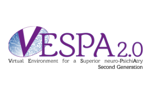

VESPA 2.0 - Virtuelle Umgebung für eine verbesserte neuro-Psychiatrie, zweite Generation

Im Rahmen des P.O. FESR SICILIA 2014/2020, Thema 1 – Forschung, technologische Entwicklung und Innovation Spezifisches Ziel 1.1 - Steigerung der Innovationsaktivitäten von Unternehmen, Maßnahme 1.1.5 - Unterstützung des technologischen Fortschritts von Unternehmen durch Finanzierung von Pilotlinien und Maßnahmen zur frühen Validierung und großflächigen Demonstration von Produkten wurde das Projekt VESPA 2.0 - Virtuelle Umgebung für eine verbesserte neuro-Psychiatrie, zweite Generation finanziert.
Das Projekt „Virtuelle Umgebung für eine verbesserte neuro-Psychiatrie, zweite Generation“ (VESPA 2.0) setzt die vorherige Aktivität zur Förderung der Gesundheit und den Einsatz innovativer Lösungen für das psychosoziale Wohlbefinden von besonders vulnerablen und neurologisch fragilen Personen fort und baut auf das Projekt VESPA (PO FESR 2007-2013, https://youtu.be/35C6OwLMkz8) auf. Die primären Forschungsbereiche entwickeln sich durch die Analyse, Überprüfung und Anwendung von:
- Technologien und Modellen zur kognitiven Stimulation und zum Lernen;
- userzentrierten Technologien und Anwendungsmodellen zur Verbesserung der Lebensqualität (Gesundheit, Sicherheit, Mobilität, soziale Integration) der identifizierten Endnutzer;
- innovativen Technologien, Produkten und Servicemodellen zur Förderung gesunder Lebensstile.
Das Projekt VESPA hat im Labor ein computergestütztes, hochimmersive 3D-Virtual-Reality-(VR)-System entwickelt und validiert, das von medizinischem Personal an entfernten Standorten fernüberwacht werden kann, zur quantitativen Bewertung und Rehabilitation der kognitiv-motorischen Funktionen von Patienten mit Intellektueller Behinderung (ID), Kommunikationsstörung (CD) oder Alzheimer-Krankheit (AD). VESPA 2.0 realisiert die weitere Entwicklung in 5D, erweitert die Anwendung auf weitere Krankheitsbilder und validiert das System VESPA in hochimmersivem VR für die diagnostische Bewertung und rehabilitative Therapie kognitiv-motorischer Funktionen bei Personen mit kognitiven Defiziten unterschiedlicher Ätiologie (Morbus Parkinson und Multiple Sklerose). Das System VESPA 2.0 wird auch durch geeignete klinische Studien validiert. Das System sammelt Leistungs- und Effektivitätsdaten, um von den zuständigen Behörden die Anerkennung als medizinisches Gerät zu erhalten, das den Ansatz zur Diagnostik und kognitiven Rehabilitation revolutionieren kann. Die Potenziale sind enorm. Die Maximierung der sozialen Wirkung erfordert, dass das System weiter zu reichhaltigeren Dienstleistungen weiterentwickelt wird, deren Wirksamkeit bereits nachgewiesen ist, auch für den häuslichen Einsatz. Mit bereits verfügbaren Technologien kann die Reichweite einer Schlüsselangebots für das SSN erreicht werden. VESPA 2.0 integriert: eine zentrale Datenbank für die Ergebnisse einzelner Nutzer, automatische Aktualisierung der Rehabilitationsprogramme und Fernüberwachung, Unterstützung des elektronischen Gesundheitsakts; nutzt die Möglichkeiten von Hochleistungsrechnen, Big Data und die neuesten Innovationen im Bereich hochimmersiver VR durch die enge Zusammenarbeit der Partner.
Thematischer Bereich der Intervention der regionalen Innovationsstrategie für die Spezialisierung S3 und verwendete Technologie: „Lebenswissenschaften“, Teilbereich „Methoden und Technologien zur Rehabilitation (degenerative Krankheiten, Lebensqualität)“.
Das Projektvolumen beträgt 2.992.285,81 €; der Zuschuss beträgt 2.578.047,81 €.